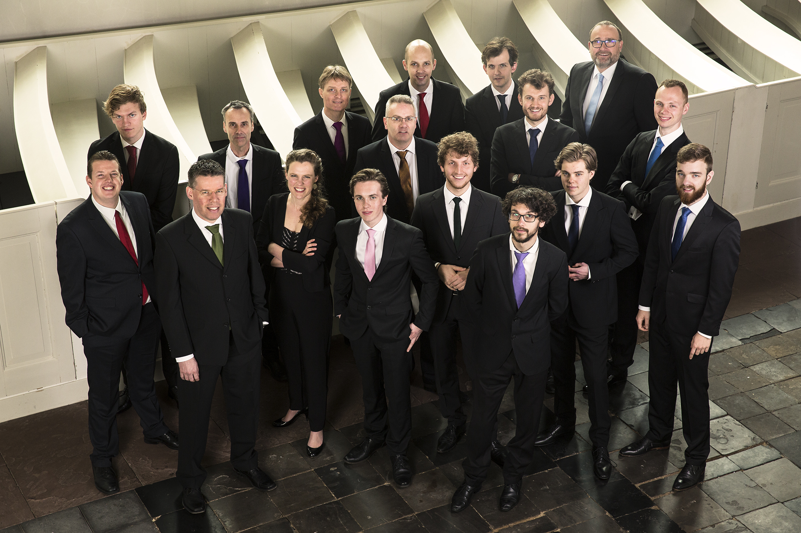

Biografie
The Gents - A choir to watch
In 1999 legden enkele zangers uit het Roder Jongenskoor de basis voor een nieuw mannenensemble. Onder leiding van dirigent Peter Dijkstra bestormden The Gents succesvol de nationale en internationale muziekpodia. Zo maakten zij diverse tournees naar onder andere Japan, Canada, Zweden, Duitsland, Engeland en Spanje. Ook namen The Gents enkele goed ontvangen cd's op. Na zijn vertrek in 2008 bleef Dijkstra als vaste gastdirigent verbonden aan het ensemble. Daarna stonden The Gents achtereenvolgens onder leiding van Maria van Nieuwkerken, Béni Csillag en Krista Audere. Sinds begin 2018 staat Annemiek van der Ven bij The Gents aan het roer.
Bijna 20 jaar na de oprichting komen de zangers uit heel Nederland. Zij hebben drukke banen als bedrijfsarts, jurist, wethouder, docent of studeren nog. Allemaal besteden zij echter een flink deel van hun vrije tijd aan hun grootste passie: zingen!
De omvang van dit mannenensemble dat voornamelijk a-capella-repertoire uitvoert, maakt The Gents uniek. Het publiek wordt verrast door een zeer onderscheidende en heldere koorklank met warme basklanken als fundament en de sprankelende stemmen van de countertenoren in de hoogte. Daar komt bij dat het repertoire van The Gents zich niet beperkt tot een specifieke periode. Van renaissance tot romantiek, pop en jazz, de mannen zingen het met verve!
Sinds hun oprichting verslonden The Gents veel ijzeren repertoire voor mannen: Byrd, Tallis, Poulenc en Duruflé stonden allemaal op de lessenaar. Daarnaast schreven - net als voor de nieuwe cd - diverse componisten en arrangeurs speciaal voor The Gents, bijvoorbeeld Wouter van Belle, Joost Kleppe, Bob Zimmerman en Jetse Bremer.
Met enige regelmaat werken The Gents samen met gerenommeerde musici. De afgelopen jaren waren dat onder andere Lenneke Ruiten, Johannette Zomer, het Haags Saxofoon Kwartet, Euwe & Sybolt de Jong en Wishful Singing.